Explore Buenos Aires
A Brief History
Buenos Aires was founded twice on the Río de la Plata, first in 1536 and permanently in 1580 as a Spanish port supplying the silver trade from Potosí. Massive 19th- and early 20th-century immigration from Italy and Spain, together with cattle and grain exports, shaped its plazas, theatres, and Haussmann-style avenues. The Casa Rosada, Teatro Colón, and neighbourhoods such as San Telmo and La Boca record how the city became Argentina's federal capital and principal cultural centre.
Attractions Map
Top Sights & Activities
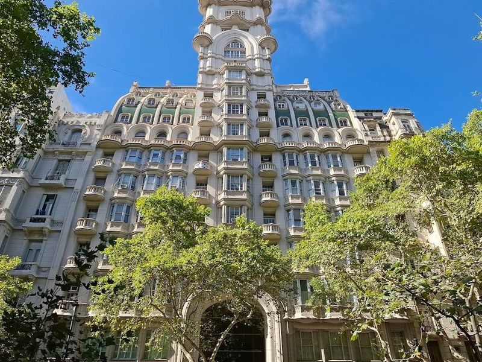
Palacio Barolo
Palacio Barolo is a unique office building in Monserrat, designed by Italian architect Mario Palanti. Inspired by Dante Alighieri's 'Divine Comedy,' the building's layout and design reflect the narrative of the poem. Divided into 'Heaven,' 'Purgatory,' and 'Hell,' each section corresponds to different parts of the book, with domes, vaults, and searchlight towers symbolizing various elements. The palace also features Latin inscriptions throughout.
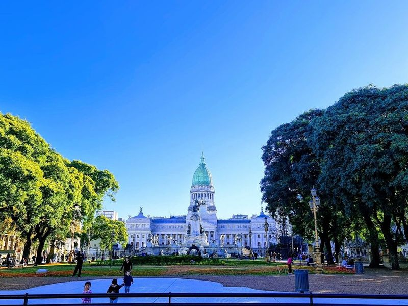
Plaza del Congreso
Plaza del Congreso is a significant square in Buenos Aires, commemorating the 100th anniversary of the revolution. The area features grand carved fountains and serves as a starting point for exploring the city. A notable landmark is the Washington-style congressional palace situated on this large square. Nearby attractions include Avenida de Mayo, with its faded yet impressive Haussmann-esque architecture, and notable sites like Palacio Barolo and Hotel Castelar.
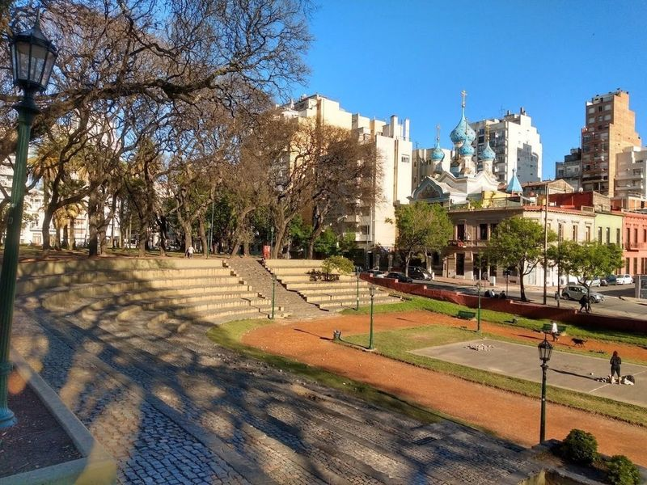
Parque Lezama
Parque Lezama is a charming city park located at the entry point to La Boca, Buenos Aires' famous port neighborhood. The park features tree-lined walkways, monuments, and statues, creating a picturesque setting for visitors. While exploring the area, visitors can admire the colorful conventillos and vibrant murals that adorn the streets.
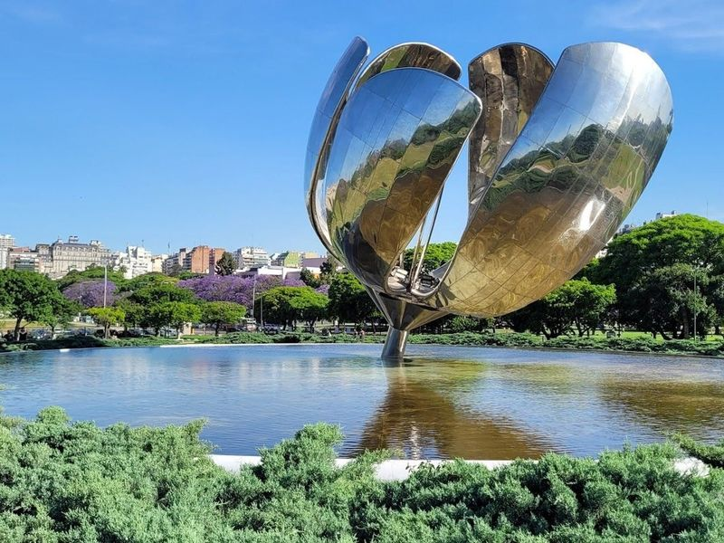
Floralis Generica
Floralis Generica is a remarkable steel flower sculpture located in Buenos Aires, inaugurated in 2002. It is a unique landmark designed by Argentine architect Eduardo Catalano, featuring hydraulics and photoelectric sensors that allow it to move. The giant flower stands at 66 feet high and opens at dawn while closing at dusk, reflecting the dynamism of time. Its gleaming steel and aluminum petals were commissioned from the Lockheed airplane factory, giving it a futuristic appearance.
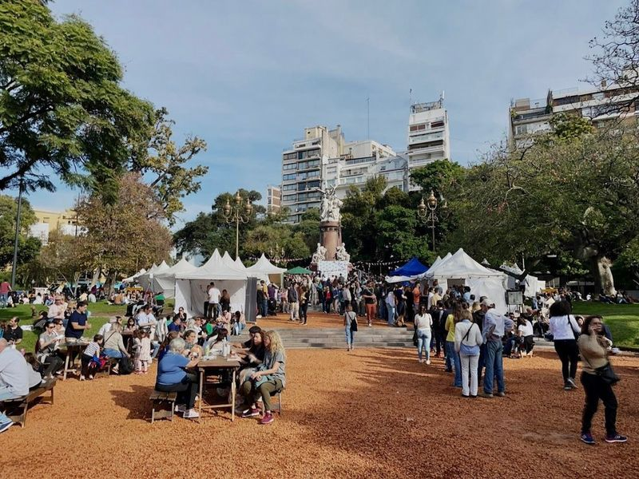
Plaza Francia
Plaza Francia is a leafy square in Buenos Aires dominated by a statue given by France to commemorate the 100th anniversary of Argentina's independence. The square is located near impressive landmarks such as the Fine Arts museum and Recoletas Plaza Francia, making it an ideal starting point for exploring the city. Visitors can continue their journey along Libertador boulevard, passing through upscale neighborhoods like Retiro and Puerto Madero.
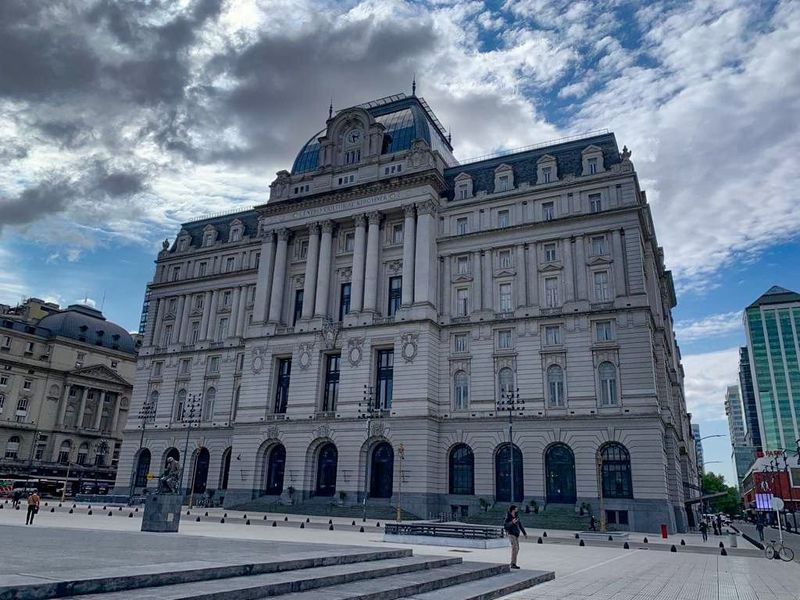
Centro Cultural Kirchner (CCK)
Palacio Libertad, Centro Cultural Domingo Faustino Sarmiento is a grand beaux arts cultural center housed within the impressive Palace of Posts and Telegraphs in Buenos Aires. It offers a diverse range of musical performances and art exhibits. The center features various spaces including La Sala Argentina for musical and performative shows, the National Auditorium with a historic organ, the Dome providing city views, and La Gran Lampara for exhibitions.
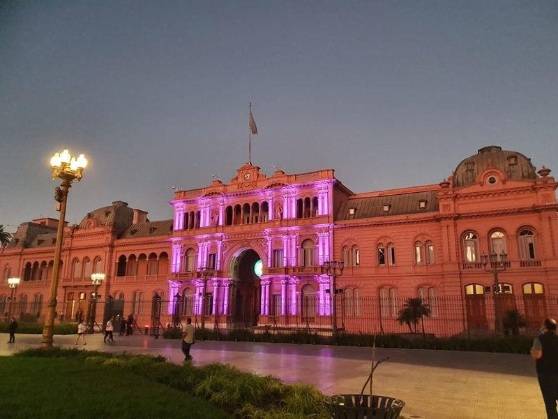
Casa Rosada
Casa Rosada, also known as the Pink House, is a historic and presidential palace located at the eastern end of Plaza de Mayo in Buenos Aires. Its distinctive pink color symbolizes a blend of Argentina's leading political parties. The palace has been witness to significant historical events, including speeches by Juan and Eva Peron from its balcony. Visitors can explore this grand structure and also discover nearby attractions such as Catedral Metropolitano and the Cabildo.
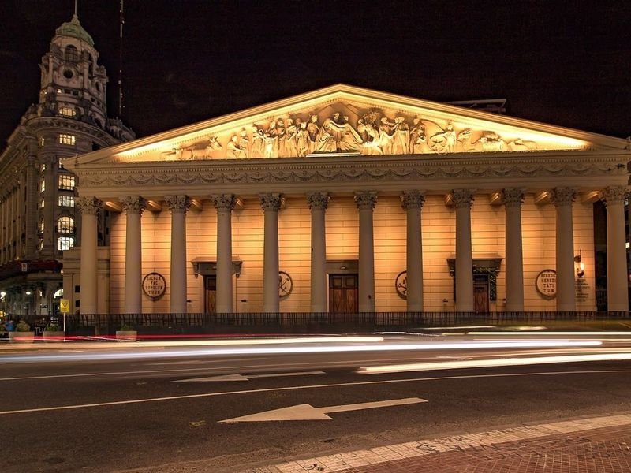
Buenos Aires Metropolitan Cathedral
Buenos Aires Metropolitan Cathedral, with a history dating back to the early 17th century, is a significant landmark in the city. The upper galleries of the cathedral house a renowned 'Carlo Vegezzi Bossi' organ from Italy, known for its classic Ripiena tradition and romantic orchestral elements. Surrounding attractions include Barolo Palace, Cabildo, Gran Rex Theatre, and Cafe Tortoni.
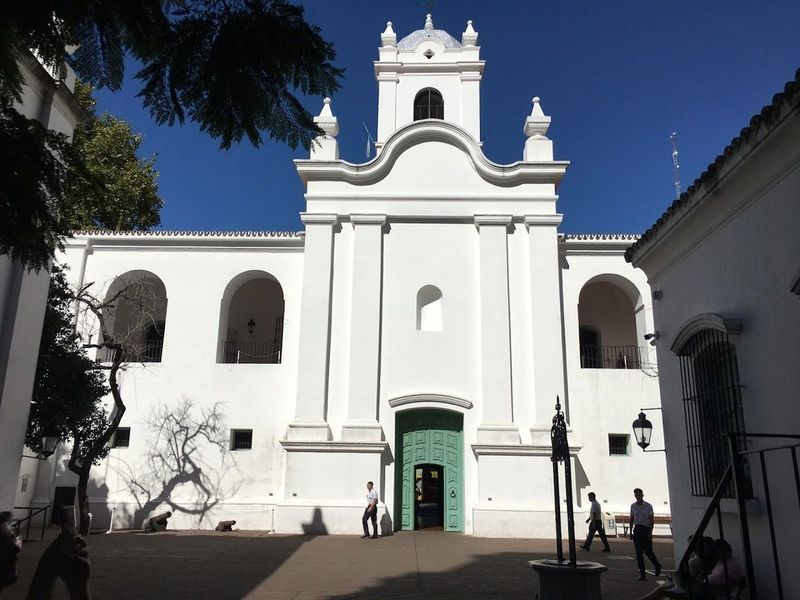
Museo Nacional del Cabildo
The Museo Nacional del Cabildo de Buenos Aires y de la Revolución de Mayo is housed in a former colonial government building and showcases a collection of Argentine heritage pieces. The museum is located in an area that features some of the city's most important structures, such as the pink Casa Rosada, Catedral Metropolitano, and the Cabildo.
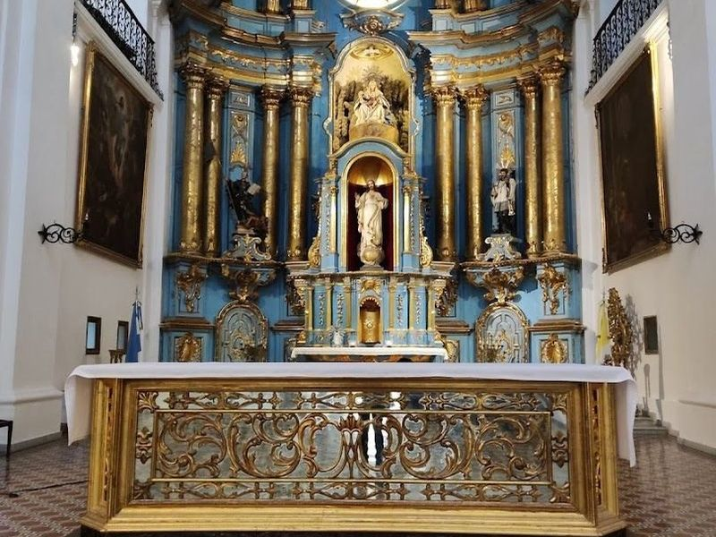
Parroquia San Ignacio de Loyola
The San Ignacio parish is one of the oldest churches in Buenos Aires and was built by Jesuit architects in 1822. The facade and one of the towers date from an earlier, 1686 version, but it was damaged after a Peronist coup failed to remove Juan Peron in 1955. Today it is one of the few colonial churches that has kept its spirit.
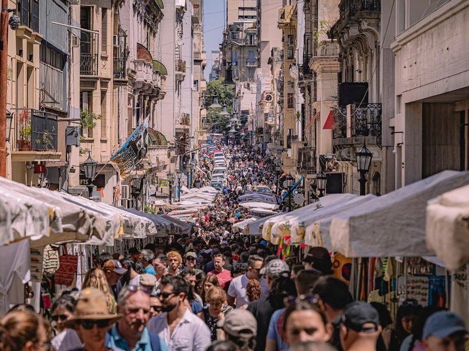
San Telmo Fair
The San Telmo Fair is a vibrant Sunday market that transforms the streets of Buenos Aires into a treasure trove of handicrafts, vintage finds, and unique clothing. Spanning over ten blocks along Defensa Street, this lively outdoor art and antique market attracts around 12,000 visitors weekly. Starting near the historic Plaza de Mayo—home to landmarks like Casa Rosada and the Metropolitan Cathedral—the fair offers an eclectic mix of goods from leather items to artisan wares.
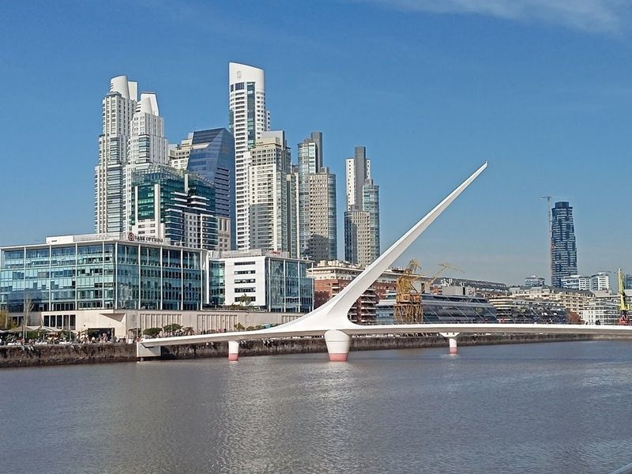
Puente de la Mujer
Puente de la Mujer, a 160-meter-long pedestrian suspension swing bridge in Buenos Aires' Puerto Madero neighborhood, stands out with its sleek and futuristic design by architect Santiago Calatrava. This rotating footbridge reflects the city's dedication to its thriving art scene. The area also serves as a departure point for day trips to Colonia del Sacramento, a UNESCO World Heritage site.
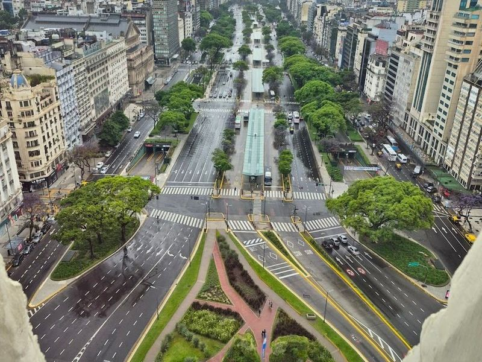
Obelisk
The Obelisco de Buenos Aires, a national historic monument and symbol of the city, is a 67.5-meter tall landmark made from Cordoba white stone. Erected in 1936 to commemorate the 400th anniversary of Buenos Aires' first foundation, it stands at the intersection of Avenida Corrientes and Avenida 9 de Julio.
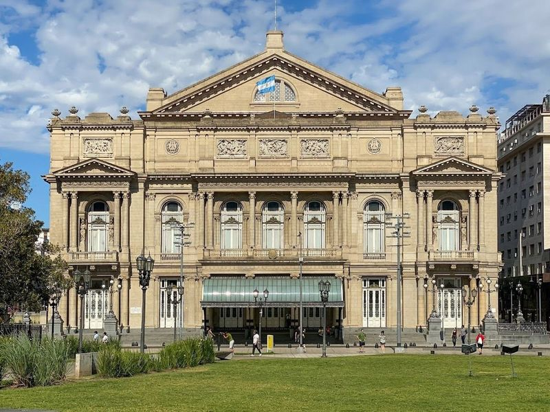
Teatro Colón
Teatro Colón, a grand theater built in 1908, is renowned for its exceptional acoustics and opulent design. It hosts classical music performances, operas, ballets, and offers tours to visitors. The French Embassy and Lavalle Street are notable landmarks nearby. Considered one of the world's top five opera houses, it has welcomed renowned artists like Maria Callas and Luciano Pavarotti.
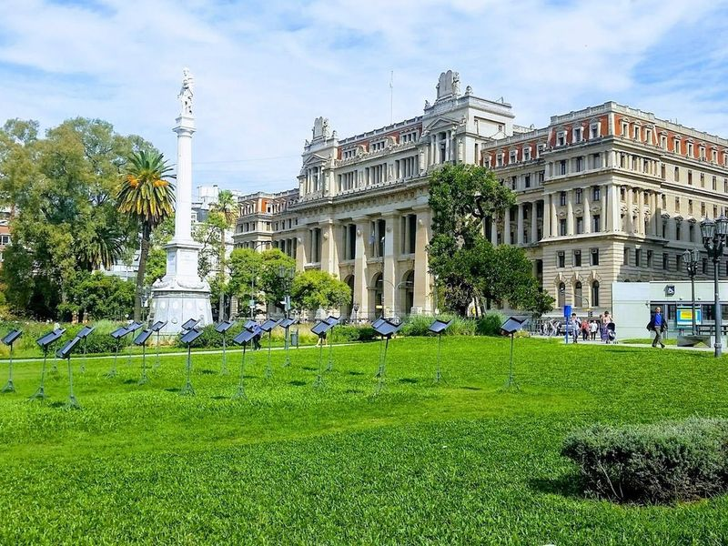
Plaza Lavalle
Chacarita Cemetery, also known as Cementerio de la Chacarita, is the largest cemetery in Argentina and a notable attraction in Buenos Aires. It is renowned for its grand mausoleums and monuments that showcase a mix of architectural styles, ranging from Neo-classical to Art Deco. The cemetery is the final resting place of famous cultural icons, including tango star Carlos Gardel. While some areas feature well-preserved structures, others show signs of neglect and decay.
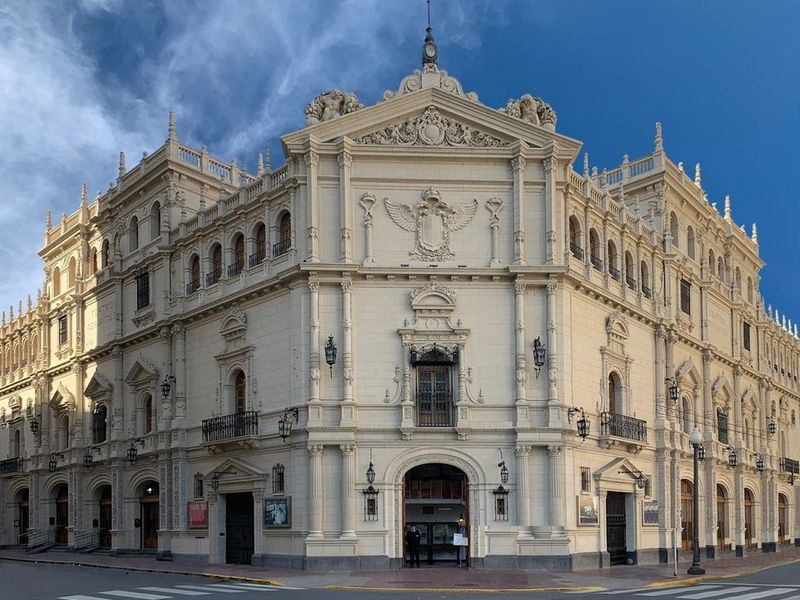
Teatro Nacional Cervantes
Teatro Nacional Cervantes, located on Cordoba Avenue in Buenos Aires, is a historic and elegant theater that serves as the national stage and comedy hub of Argentina. Built in 1921, it was conceived by Maria Guerrero to promote the arts. The theater features three performance halls, with the Maria Guerrero Salon being the main one. It is situated near the renowned opera house, Colon Theatre.
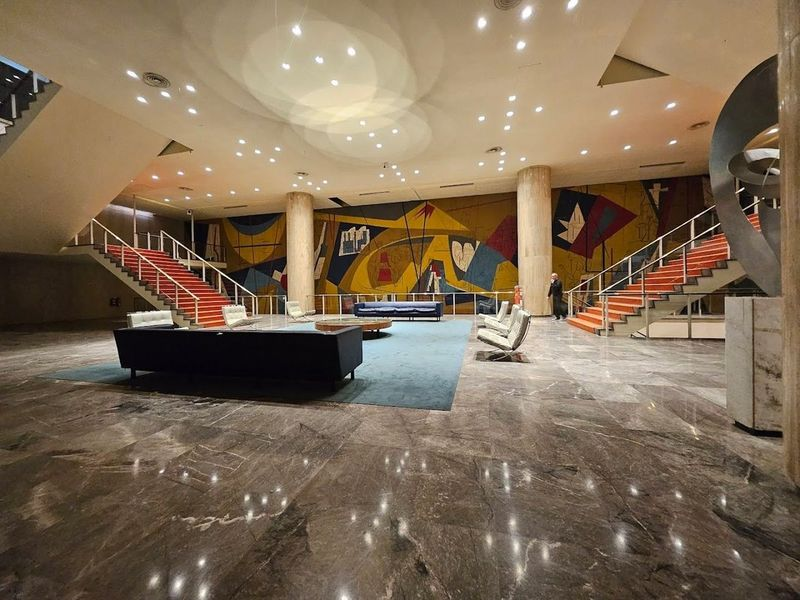
Teatro General San Martin
Teatro General San Martin, a significant cultural hub in Latin America, is a massive complex with three performance stages, a cinema, and various exhibition halls. The largest stage, seating 1,000 people and adorned with Italian-style architecture and dramatic sculptures, hosts classical performances while the smaller stages feature experimental and avant-garde works.
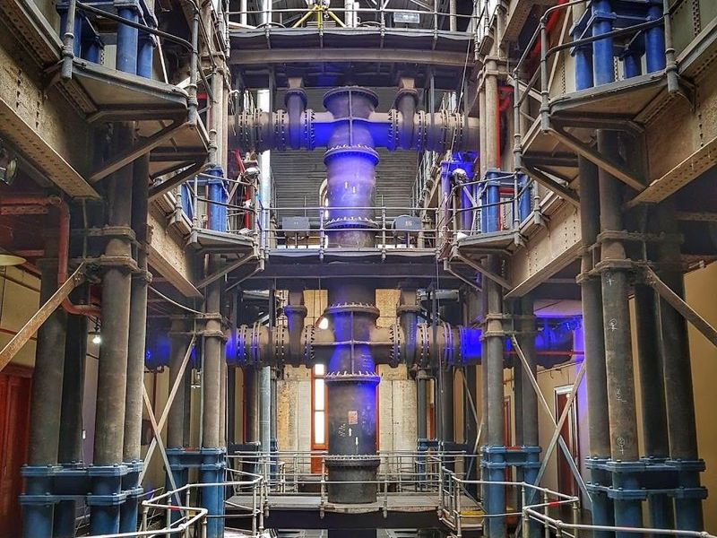
Museo del Agua y de la Historia Sanitaria
The Museo del Agua y de la Historia Sanitaria, located in the Palacio de Aguas Corrientes, is a fascinating museum that showcases the often overlooked but crucial aspect of urban development: water filtration and transportation. The palatial design of the building, adorned with 300,000 terra-cotta tiles, adds to its allure. Built in 1886 following a devastating yellow fever outbreak, this water-pumping station has a rich history.
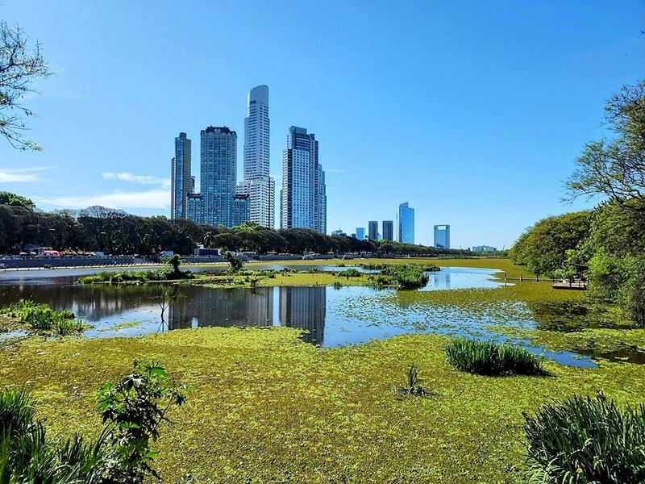
Reserva Ecológica Costanera Sur
Reserva Ecológica Costanera Sur is a sprawling 350-hectare ecological reserve located in Buenos Aires, adjacent to the modern Puerto Madero district. This natural oasis features lagoons, marshland, and forests that are home to a diverse array of bird, butterfly, and animal species. Visitors can explore the reserve's network of walking and cycling trails that lead to scenic viewpoints overlooking the Rio de la Plata.
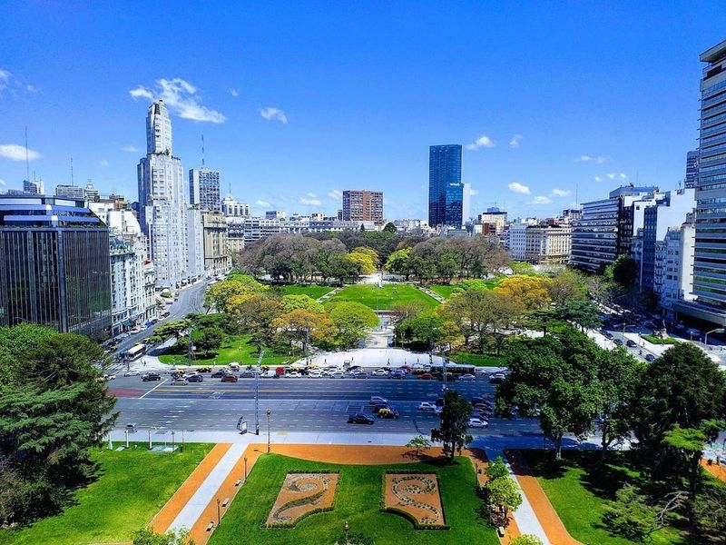
Plaza General San Martín
Plaza General San Martín is a picturesque cliffside park in downtown Buenos Aires, offering open green spaces and ancient trees. It overlooks the Puerto Madero neighborhood and the River Plate, making it a popular spot for relaxation among downtown workers and shoppers. The park has a rich history dating back to the 18th century and is surrounded by architectural monuments reflecting Argentina's heritage.
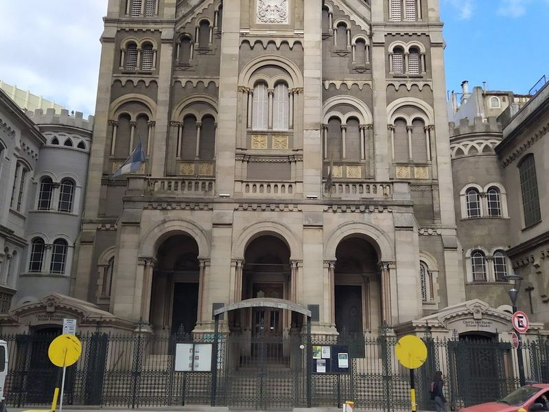
Basílica del Santísimo Sacramento
The Basílica del Santísimo Sacramento, also known as the Basilica of the Holy Sacrament, is an extravagant Catholic church located in the Retiro neighborhood of Buenos Aires. Built in 1916 by Maria Mercedes Castellanos de Anchorena, it features a unique blend of Romanesque and Gothic architectural elements with five towers adorning its structure. The church's eclectic style incorporates Gothic, Romanesque, Byzantine, and Renaissance influences.
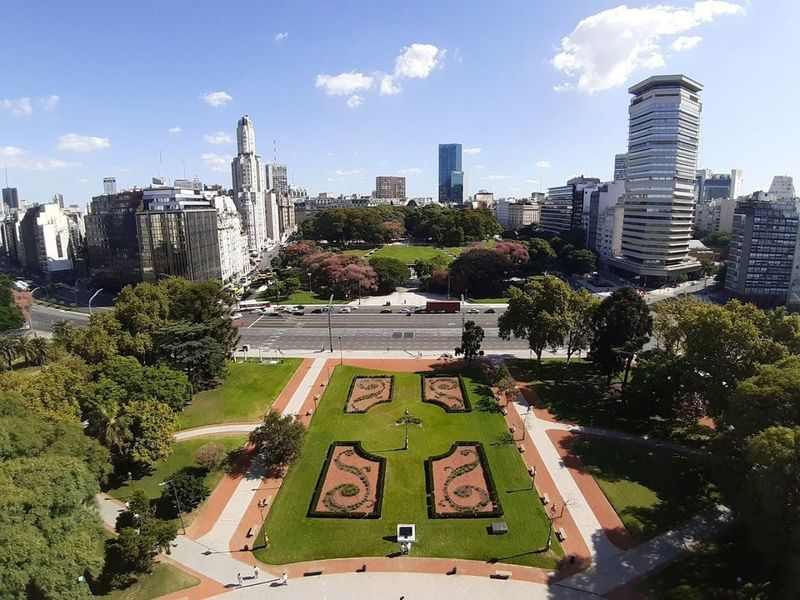
Torre Monumental
Nestled in the vibrant Retiro neighborhood of Buenos Aires, the Torre Monumental stands as a striking tribute to Argentina's history and its ties with Britain. Originally known as Torre de los Ingleses, this impressive clock tower was gifted by the British community in 1916 to commemorate the centenary of Argentina's May Revolution.
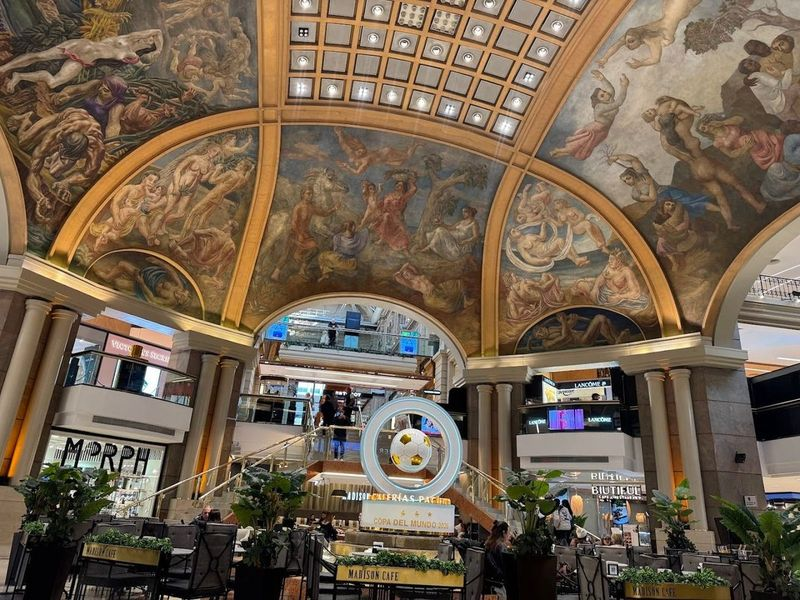
Galerías Pacífico
Galerías Pacífico is a unique shopping mall located in the heart of the city, at the intersection of Calle Florida and Avenida Cordoba. The grand building, designated as a national historic monument, boasts murals and impressive architecture. Since its opening in 1992, it has been home to a variety of internationally renowned stores such as Christian Lacroix and Polo Ralph Lauren.
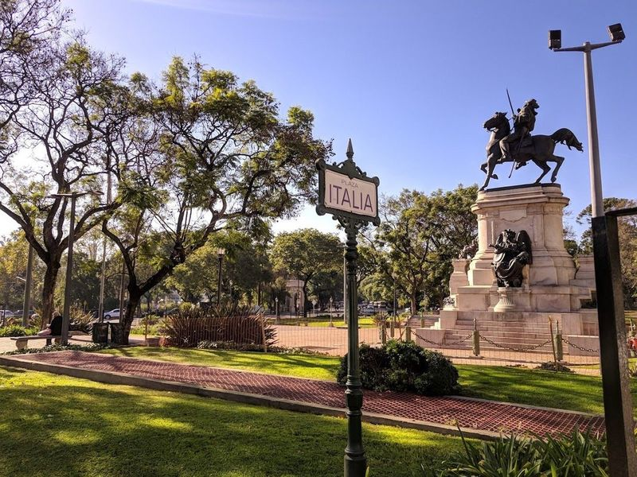
Plaza Italia
The Plaza Italia is a busy pedestrian square in the Palermo district of Buenos Aires, Argentina where Santa Fe Avenue and Avenida Sarmiento meet. The plaza is considered to be the entrance to the Palermo Woods. The plaza features a monument of Giuseppe Garibaldi, as well as a Roman column.
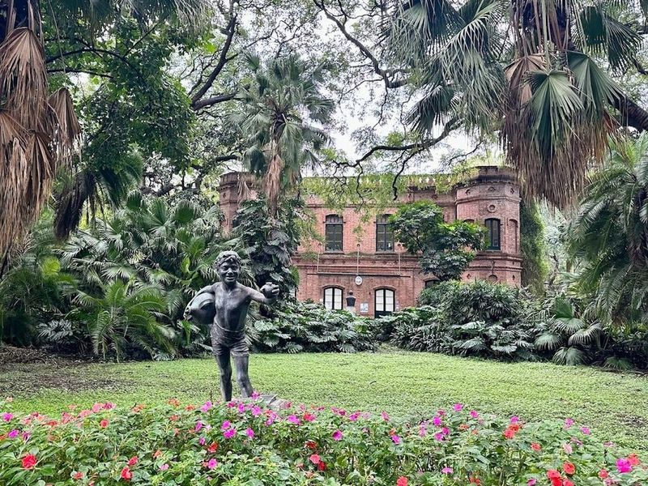
Jardín Botánico Carlos Thays
Jardín Botánico Carlos Thays is a serene oasis in the heart of bustling Buenos Aires, offering a peaceful escape surrounded by lush greenery and colorful flora. Spanning 7 hectares, this botanical garden boasts over 6,000 species of plants from around the world. Visitors can enjoy guided tours through the verdant landscape, featuring a rare continental plant collection and an art nouveau greenhouse imported from France in the 1800s.
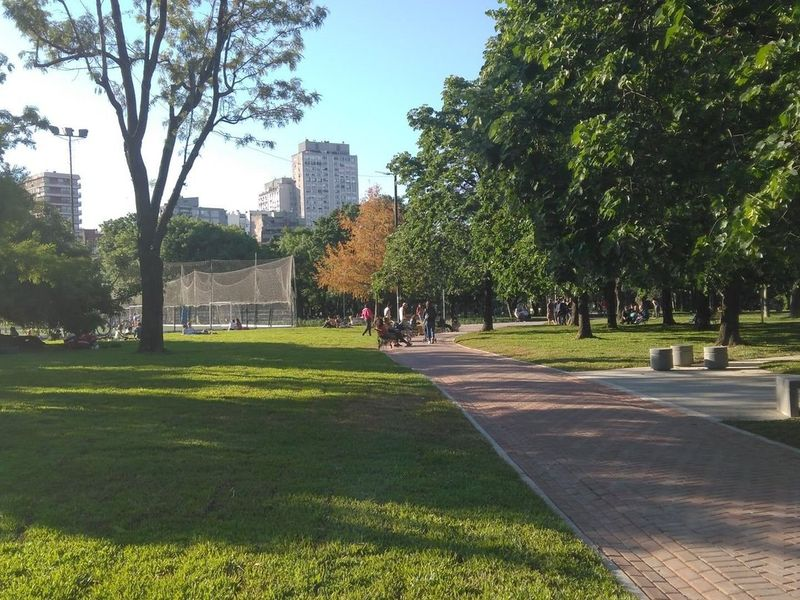
Las Heras Park
Las Heras Park, located in the heart of Buenos Aires' upscale neighborhood, spans six acres and offers a variety of recreational activities. The park features soccer fields, a skating rink, playgrounds, fitness machines, and ping-pong tables amidst lush green lawns and trees. Once the site of the National Penitentiary until 1962, it now provides a peaceful escape from urban energy.
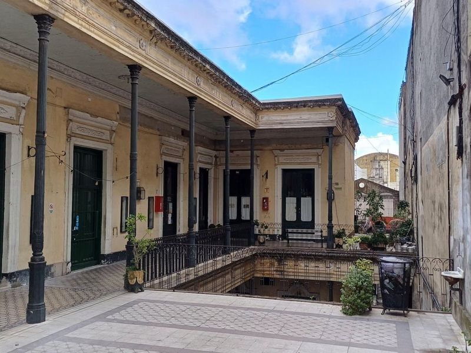
Plaza Dorrego
Plaza Dorrego is a historic square in Buenos Aires, known for its vibrant atmosphere and cultural offerings. The plaza is famous for its tango dancers and hosts traditional outdoor milongas in the evenings. Surrounding the square, Calle Defensa is lined with antique stores and well-preserved architecture, making it a great place to explore. On Sundays, visitors can enjoy an antiques market at Plaza Dorrego, offering a variety of unique finds.
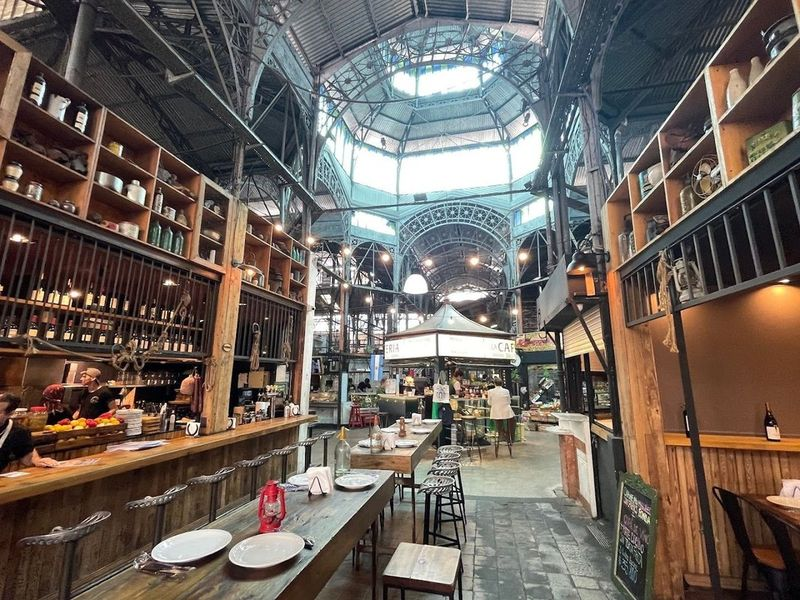
Mercado San Telmo
Nestled in the historic San Telmo neighborhood, Mercado San Telmo is a vibrant outdoor street market that has been captivating visitors since its establishment in 1897. This bustling hub is a paradise for food enthusiasts and vintage seekers alike, showcasing an eclectic array of vendors offering everything from fresh produce and meats to traditional Argentine delicacies like empanadas and dulce de leche.
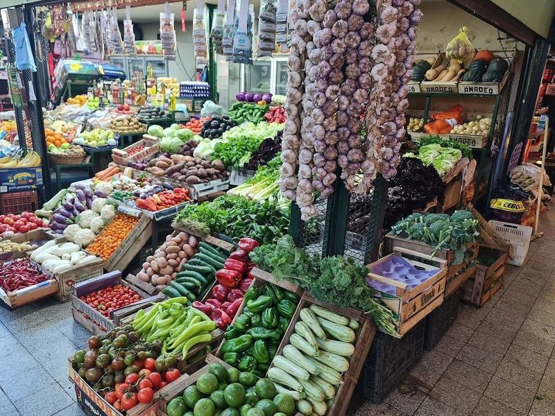
Mercado de San Telmo
San Telmo Market is a renowned covered market in Buenos Aires, offering a wide array of antiques and vintage items. While the feria only takes place on Sundays, the market's small shops are open daily, providing an assortment of goods such as old license plates, lamps, magazines, and cassette tapes. The weekends are particularly bustling with all shops open and great deals on vintage clothing including shoes and bags.
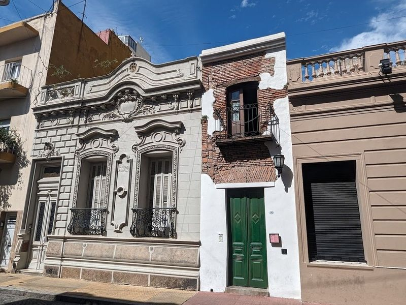
Casa Mínima
Casa Mínima, located in San Telmo, is a narrow building that has been restored and recognized as a historical structure. This 2.5-meter wide house is believed to have been given to slaves during the slavery period in Argentina. It was originally owned by a freed black slave and is now open for tours. Despite its small size, it holds significant historical value and is worth visiting while strolling through San Telmo.
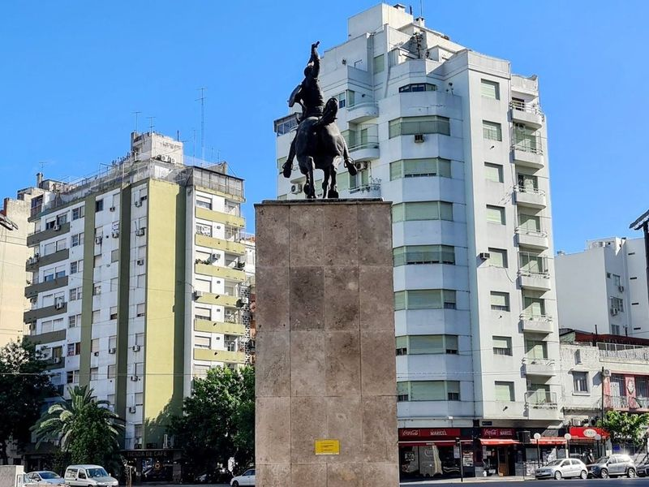
Cid Campeador
Nestled in the vibrant neighborhood of Caballito, the Cid Campeador Monument stands as a tribute to the legendary 11th-century warrior Rodrigo Diaz de Vivar, famously known as Cid Campeador. This impressive statue showcases various weapons, including his Tizona sword and spear, reflecting the valor of this historical figure.
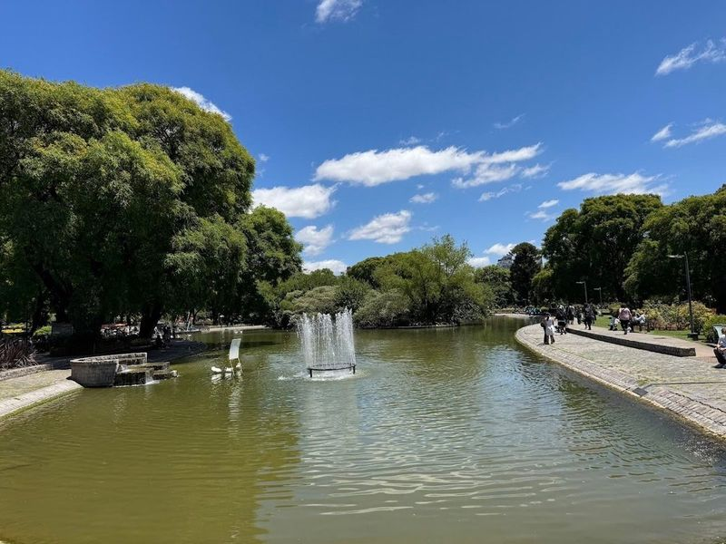
Parque Centenario
Parque Centenario, located in the heart of Buenos Aires, is a vibrant green space that captures the essence of the city. The park features an amphitheater, a picturesque lake with ducks, captivating murals, sculptures, and a charming fountain. On weekends, a bustling market lines the park's ring road while visitors can observe yoga sessions by the lake and witness circus performers showcasing their talents.
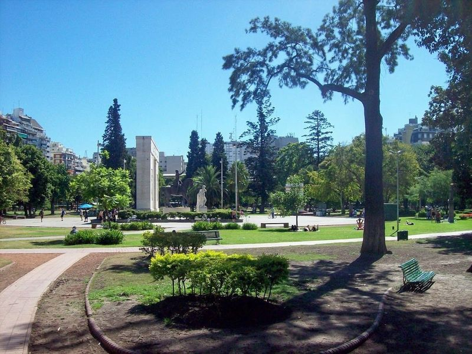
Parque Rivadavia
Parque Rivadavia, nestled in the charming Caballito neighborhood, is a delightful green oasis that offers a unique blend of culture and leisure. This park features a striking monument to Simón Bolívar and is renowned for its vibrant secondhand market. On weekends, visitors can explore an array of stalls selling vintage books, magazines, vinyl records, and even quirky collectibles like knock-off sports gear and plants.
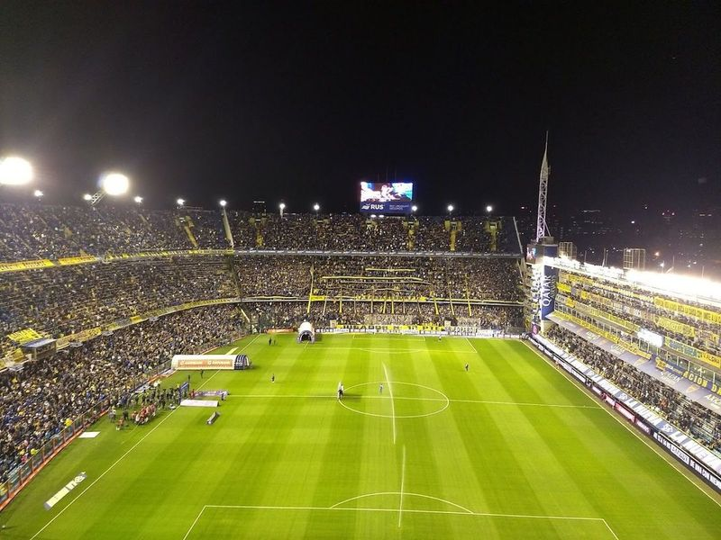
Estadio Alberto J Armando
La Bombonera, also known as the Estadio Alberto J. Armando, is a renowned soccer stadium and the home of Argentina's Boca Juniors team. Its nickname 'The Chocolate Box' comes from its unique size and shape. Visitors can take a tour of the stadium and explore the adjacent Museo de la Pasion Boquense in the vibrant La Boca neighborhood.
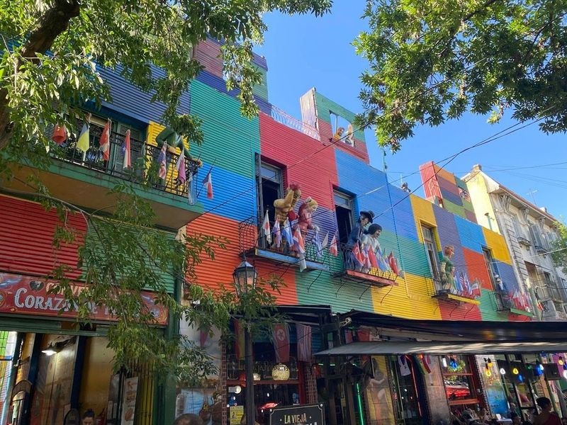
Caminito
Caminito, a vibrant alleyway in the La Boca neighborhood of Buenos Aires, is a feast for the senses with its brightly painted houses and rich cultural history. This charming street museum pays homage to tango music and embodies the spirit of Argentina's artistic heritage. While it draws countless visitors eager to soak in its colorful atmosphere, be prepared for a bustling scene filled with vendors and tourists alike.
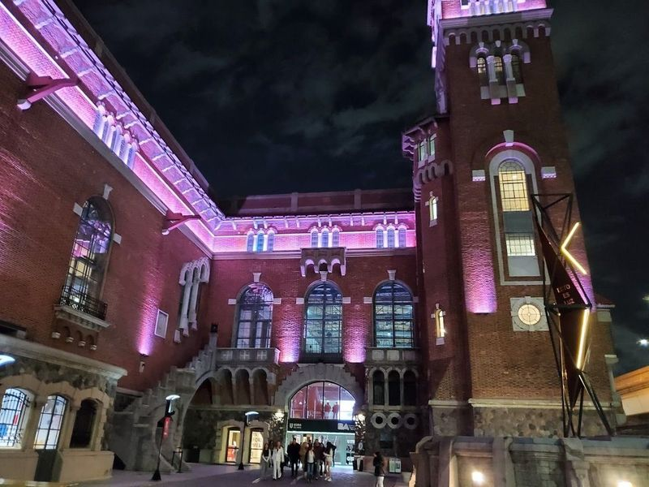
Usina del Arte
Usina del Arte is a captivating cultural center located in Buenos Aires, housed in a historic early 20th-century electrical power plant. This former factory has been transformed into a vibrant hub for the arts, technology, and gastronomy. The venue features two auditoriums, gallery space, and hosts an array of programs suitable for all ages.
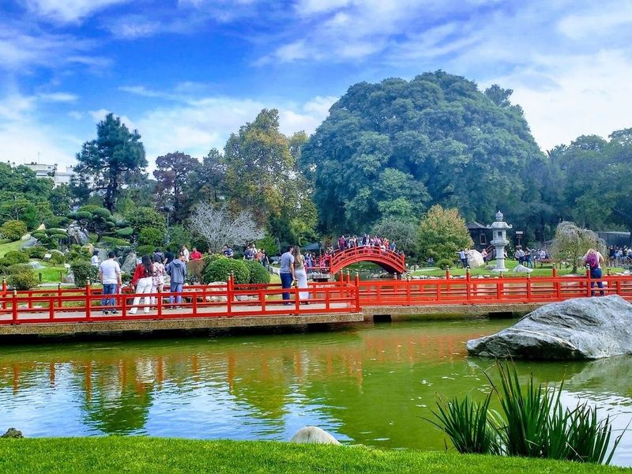
Jardín Japonés
Nestled in the bustling Argentine capital, Jardín Japonés is a serene oasis that beautifully blends urban nature with metropolitan energy. This meticulously crafted garden is a homage to Japanese design and philosophy, featuring carefully arranged rocks, water features, bridges, and traditional plants like bonsai and orchids.
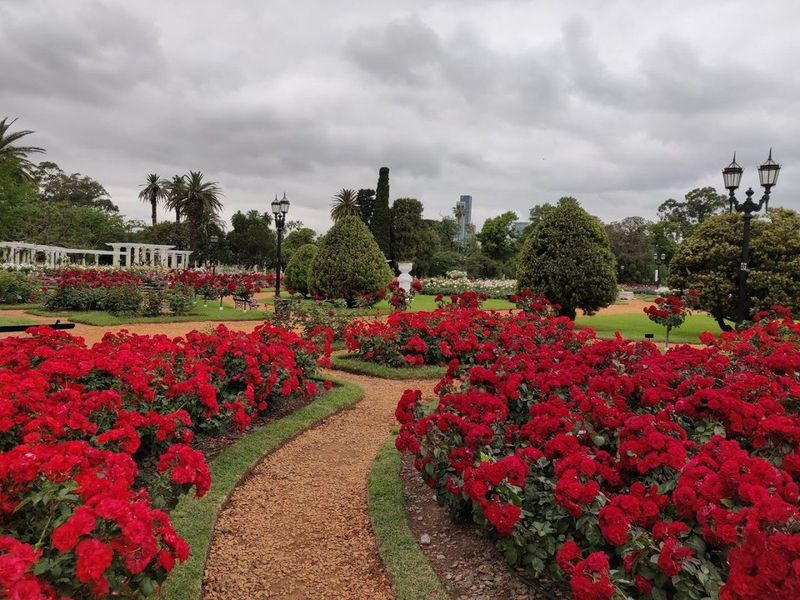
El Rosedal Garden
Paseo El Rosedal Garden, located in Parque Tres de Febrero, is a must-visit destination in Buenos Aires. The garden features over 12,000 roses and offers a picturesque setting for leisurely strolls. Visitors can also admire statues of famous poets and enjoy the serene ambiance of the surrounding lake and quaint bridge.
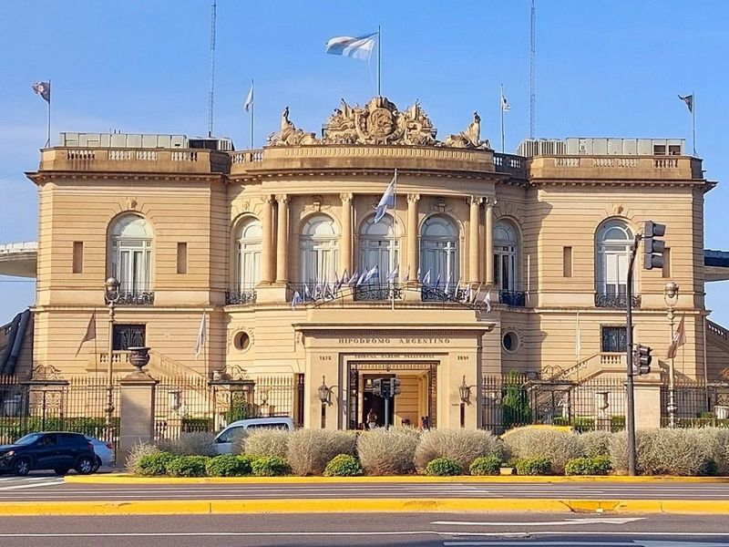
Hipodromo Argentino de Palermo
Hipodromo Argentino de Palermo, also known as Palermo Hipodromo, is a prestigious horse racing venue in Argentina with a French-style design. It hosts approximately 1,400 races annually and is renowned for its exceptional dirt courses. The facility, established in 1876, offers not only horse racing but also features a casino, multiple French restaurants, and shopping areas. Visitors can enjoy the beautiful setting and architecture of the racecourse even on non-race days.
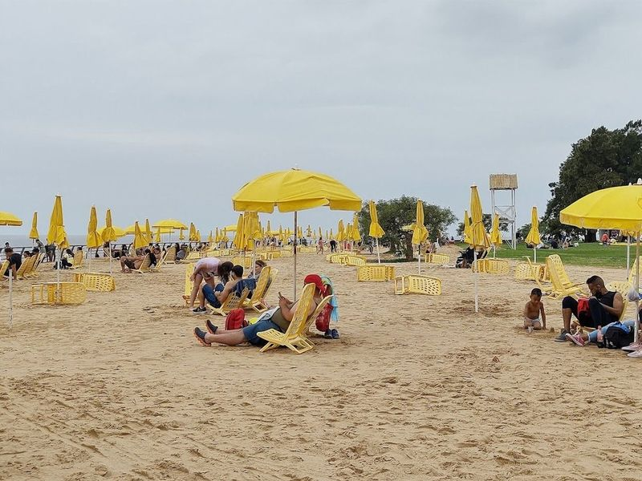
Parque de los Niños
Nestled along the waterfront in Buenos Aires, **Parque de los Niños** is a delightful haven for families and children alike. This expansive park boasts lush green spaces, inviting picnic areas, and an array of playgrounds that promise hours of fun. As you stroll along its scenic paths or relax by the large lake—perfect for boating— find plenty of opportunities to unwind amidst nature.